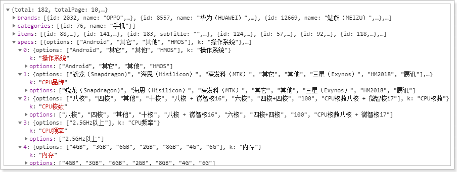
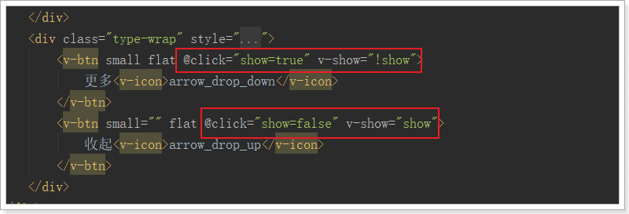
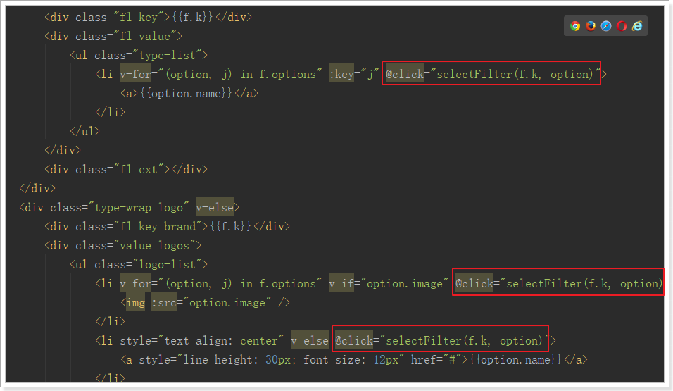
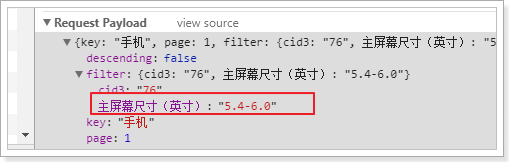
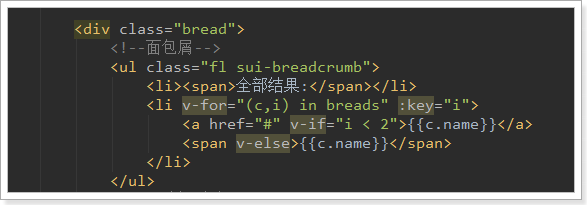
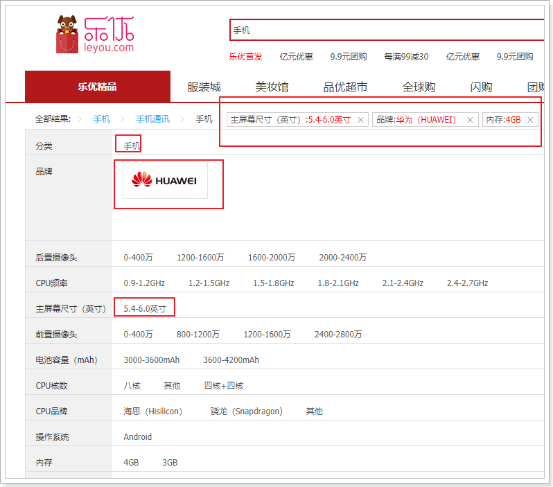
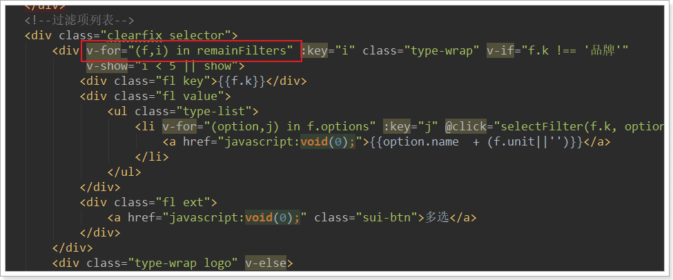
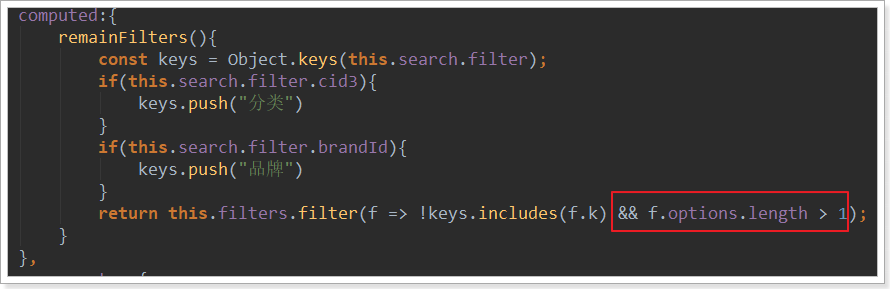
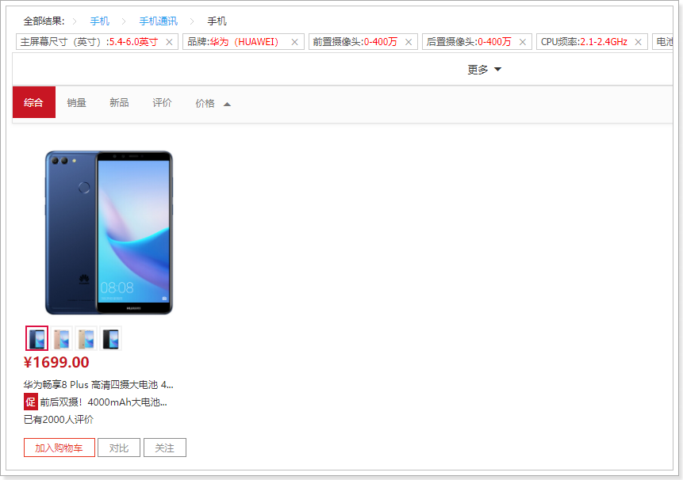

首先看下页面要实现的效果：
整个过滤部分有3块：
顶部导航要展示的内容跟用户选择的过滤条件有关。
所以，这部分需要依赖第二部分：过滤条件的展示和选择。因此我们先不着急去做。
展开或收起的按钮是否显示，取决于过滤条件有多少，如果很少，那么就没必要展示。所以也是跟第二部分的过滤条件有关。
这样分析来看，我们必须先做第二部分：过滤条件展示。
先来看分类和品牌。在我们的数据库中已经有所有的分类和品牌信息。在这个位置，是不是把所有的分类和品牌信息都展示出来呢？
显然不是，用户搜索的条件会对商品进行过滤，而在搜索结果中，不一定包含所有的分类和品牌，直接展示出所有商品分类，让用户选择显然是不合适的。
无论是分类信息，还是品牌信息，都应该从搜索的结果商品中进行聚合得到。
原来，我们返回的结果是PageResult对象，里面只有total、totalPage、items3个属性。但是现在要对商品分类和品牌进行聚合，数据显然不够用，我们需要对返回的结果进行扩展，添加分类和品牌的数据。
那么问题来了：以什么格式返回呢？
看页面：

分类：页面显示了分类名称，但背后肯定要保存id信息。所以至少要有id和name
品牌：页面展示的有logo，有文字，当然肯定有id，基本上是品牌的完整数据
我们新建一个类，继承PageResult，然后扩展两个新的属性：分类集合和品牌集合：
public class SearchResult extends PageResult<Goods>{
private List<Category> categories;
private List<Brand> brands;
public SearchResult(Long total, Integer totalPage, List<Goods> items, List<Category> categories, List<Brand> brands) {
super(total, totalPage, items);
this.categories = categories;
this.brands = brands;
}
}我们修改搜索的业务逻辑，对分类和品牌聚合。
因为索引库中只有id，所以我们根据id聚合，然后再根据id去查询完整数据。
所以，商品微服务需要提供一个接口：根据品牌id集合，批量查询品牌。
BrandApi
@RequestMapping("brand")
public interface BrandApi {
@GetMapping("list")
List<Brand> queryBrandByIds(@RequestParam("ids") List<Long> ids);
}BrandController
/**
* 根据多个id查询品牌
* @param ids
* @return
*/
@GetMapping("list")
public ResponseEntity<List<Brand>> queryBrandByIds(@RequestParam("ids") List<Long> ids){
List<Brand> list = this.brandService.queryBrandByIds(ids);
if(list == null){
new ResponseEntity<>(HttpStatus.NOT_FOUND);
}
return ResponseEntity.ok(list);
}BrandService
public List<Brand> queryBrandByIds(List<Long> ids) {
return this.brandMapper.selectByIdList(ids);
}BrandMapper
继承通用mapper的 SelectByIdListMapper即可
public interface BrandMapper extends Mapper<Brand>, SelectByIdListMapper<Brand,Long> {}添加BrandClient
@FeignClient("item-service")
public interface BrandClient extends BrandApi {
}修改SearchService：
@Service
public class SearchService {
@Autowired
private GoodsRepository goodsRepository;
@Autowired
private CategoryClient categoryClient;
@Autowired
private BrandClient brandClient;
private static final Logger logger = LoggerFactory.getLogger(SearchService.class);
public PageResult<Goods> search(SearchRequest request) {
// 判断是否有搜索条件，如果没有，直接返回null。不允许搜索全部商品
if (StringUtils.isBlank(request.getKey())) {
return null;
}
// 1、构建查询条件
NativeSearchQueryBuilder queryBuilder = new NativeSearchQueryBuilder();
// 1.1、基本查询
queryBuilder.withQuery(QueryBuilders.matchQuery("all", request.getKey()));
// 通过sourceFilter设置返回的结果字段,我们只需要id、skus、subTitle
queryBuilder.withSourceFilter(new FetchSourceFilter(
new String[]{"id", "skus", "subTitle"}, null));
// 1.2.分页排序
searchWithPageAndSort(queryBuilder,request);
// 1.3、聚合
String categoryAggName = "category"; // 商品分类聚合名称
String brandAggName = "brand"; // 品牌聚合名称
// 对商品分类进行聚合
queryBuilder.addAggregation(AggregationBuilders.terms(categoryAggName).field("cid3"));
// 对品牌进行聚合
queryBuilder.addAggregation(AggregationBuilders.terms(brandAggName).field("brandId"));
// 2、查询，获取结果
AggregatedPage<Goods> pageInfo = (AggregatedPage<Goods>) this.goodsRepository.search(queryBuilder.build());
// 3、解析查询结果
// 3.1、分页信息
Long total = pageInfo.getTotalElements();
int totalPage = (total.intValue() + request.getSize() - 1) / request.getSize();
// 3.2、商品分类的聚合结果
List<Category> categories =
getCategoryAggResult(pageInfo.getAggregation(categoryAggName));
// 3.3、品牌的聚合结果
List<Brand> brands = getBrandAggResult(pageInfo.getAggregation(brandAggName));
// 返回结果
return new SearchResult(goodsPage.getTotalElements(), goodsPage.getTotalPages(), goodsPage.getContent(), categories, brands);
}
// 解析品牌聚合结果
private List<Brand> getBrandAggResult(Aggregation aggregation) {
try {
LongTerms brandAgg = (LongTerms) aggregation;
List<Long> bids = new ArrayList<>();
for (LongTerms.Bucket bucket : brandAgg.getBuckets()) {
bids.add(bucket.getKeyAsNumber().longValue());
}
// 根据id查询品牌
return this.brandClient.queryBrandByIds(bids);
} catch (Exception e){
logger.error("品牌聚合出现异常：", e);
return null;
}
}
// 解析商品分类聚合结果
private List<Category> getCategoryAggResult(Aggregation aggregation) {
try{
List<Category> categories = new ArrayList<>();
LongTerms categoryAgg = (LongTerms) aggregation;
List<Long> cids = new ArrayList<>();
for (LongTerms.Bucket bucket : categoryAgg.getBuckets()) {
cids.add(bucket.getKeyAsNumber().longValue());
}
// 根据id查询分类名称
List<String> names = this.categoryClient.queryNameByIds(cids);
for (int i = 0; i < names.size(); i++) {
Category c = new Category();
c.setId(cids.get(i));
c.setName(names.get(i));
categories.add(c);
}
return categories;
} catch (Exception e){
logger.error("分类聚合出现异常：", e);
return null;
}
}
// 构建基本查询条件
private void searchWithPageAndSort(NativeSearchQueryBuilder queryBuilder, SearchRequest request) {
// 准备分页参数
int page = request.getPage();
int size = request.getSize();
// 1、分页
queryBuilder.withPageable(PageRequest.of(page - 1, size));
// 2、排序
String sortBy = request.getSortBy();
Boolean desc = request.getDescending();
if (StringUtils.isNotBlank(sortBy)) {
// 如果不为空，则进行排序
queryBuilder.withSort(SortBuilders.fieldSort(sortBy).order(desc ? SortOrder.DESC : SortOrder.ASC));
}
}
}测试：

来看下页面的展示效果：

虽然分类、品牌内容都不太一样，但是结构相似，都是key和value的结构。
而且页面结构也极为类似：

所以，我们可以把所有的过滤条件放入一个数组中，然后在页面利用v-for遍历一次生成。
其基本结构是这样的：
[
{
k:"过滤字段名",
options:[{/*过滤字段值对象*/},{/*过滤字段值对象*/}]
}
]我们先在data中定义数组：filter，等待组装过滤参数：
data: {
ly,
search:{
key: "",
page: 1
},
goodsList:[], // 接收搜索得到的结果
total: 0, // 总条数
totalPage: 0, // 总页数
filters:[] // 过滤参数集合
},然后在查询搜索结果的回调函数中，对过滤参数进行封装：

然后刷新页面，通过浏览器工具，查看封装的结果：

首先看页面原来的代码：

我们注意到，虽然页面元素是一样的，但是品牌会比其它搜索条件多出一些样式，因为品牌是以图片展示。需要进行特殊处理。数据展示是一致的，我们采用v-for处理：
<div class="type-wrap" v-for="(f,i) in filters" :key="i" v-if="f.k !== '品牌'">
<div class="fl key">{{f.k}}</div>
<div class="fl value">
<ul class="type-list">
<li v-for="(option, j) in f.options" :key="j">
<a>{{option.name}}</a>
</li>
</ul>
</div>
<div class="fl ext"></div>
</div>
<div class="type-wrap logo" v-else>
<div class="fl key brand">{{f.k}}</div>
<div class="value logos">
<ul class="logo-list">
<li v-for="(option, j) in f.options" v-if="option.image">
<img :src="option.image" />
</li>
<li style="text-align: center" v-else>
<a style="line-height: 30px; font-size: 12px" href="#">{{option.name}}</a>
</li>
</ul>
</div>
<div class="fl ext">
<a href="javascript:void(0);" class="sui-btn">多选</a>
</div>
</div>结果：

有四个问题需要先思考清楚：
什么情况下显示有关规格参数的过滤？
如果用户尚未选择商品分类，或者聚合得到的分类数大于1，那么就没必要进行规格参数的聚合。因为不同分类的商品，其规格是不同的。
因此，我们在后台需要对聚合得到的商品分类数量进行判断，如果等于1，我们才继续进行规格参数的聚合。
如何知道哪些规格需要过滤？
我们不能把数据库中的所有规格参数都拿来过滤。因为并不是所有的规格参数都可以用来过滤，参数的值是不确定的。
值的庆幸的是，我们在设计规格参数时，已经标记了某些规格可搜索，某些不可搜索。
因此，一旦商品分类确定，我们就可以根据商品分类查询到其对应的规格，从而知道哪些规格要进行搜索。
要过滤的参数，其可选值是如何获取的？
虽然数据库中有所有的规格参数，但是不能把一切数据都用来供用户选择。
与商品分类和品牌一样，应该是从用户搜索得到的结果中聚合，得到与结果品牌的规格参数可选值。
规格过滤的可选值，其数据格式怎样的？
我们直接看页面效果：

我们之前存储时已经将数据分段，恰好符合这里的需求
接下来，我们就用代码实现刚才的思路。
总结一下，应该是以下几步：
返回结果中需要增加新数据，用来保存规格参数过滤条件。这里与前面的品牌和分类过滤的json结构类似：
[
{
"k":"规格参数名",
"options":["规格参数值","规格参数值"]
}
]因此，在java中我们用List
public class SearchResult extends PageResult<Goods>{
private List<Category> categories;// 分类过滤条件
private List<Brand> brands; // 品牌过滤条件
private List<Map<String,String>> specs; // 规格参数过滤条件
public SearchResult(Long total, Integer totalPage, List<Goods> items,
List<Category> categories, List<Brand> brands,
List<Map<String,String>> specs) {
super(total, totalPage, items);
this.categories = categories;
this.brands = brands;
this.specs = specs;
}
}首先，在聚合得到商品分类后，判断分类的个数，如果是1个则进行规格聚合：
我们将聚合的代码抽取到了一个getSpecs方法中。
然后，我们需要根据商品分类，查询所有可用于搜索的规格参数：
要注意的是，这里我们需要根据id查询规格，而规格参数接口需要从商品微服务提供
因为规格参数保存时不做分词，因此其名称会自动带上一个.keyword后缀：
@Service
public class SearchService {
@Autowired
private CategoryClient categoryClient;
@Autowired
private GoodsClient goodsClient;
@Autowired
private SpecificationClient specificationClient;
@Autowired
private GoodsRepository goodsRepository;
@Autowired
private BrandClient brandClient;
@Autowired
private ElasticsearchTemplate elasticsearchTemplate;
private ObjectMapper mapper = new ObjectMapper();
private static final Logger logger = LoggerFactory.getLogger(SearchService.class);
public SearchResult search(SearchRequest request) {
String key = request.getKey();
// 判断是否有搜索条件，如果没有，直接返回null。不允许搜索全部商品
if (StringUtils.isBlank(key)) {
return null;
}
// 构建查询条件
NativeSearchQueryBuilder queryBuilder = new NativeSearchQueryBuilder();
MatchQueryBuilder basicQuery = QueryBuilders.matchQuery("all", key).operator(Operator.AND);
queryBuilder.withQuery(basicQuery);
// 通过sourceFilter设置返回的结果字段,我们只需要id、skus、subTitle
queryBuilder.withSourceFilter(new FetchSourceFilter(new String[]{"id", "skus", "subTitle"}, null));
// 分页
searchWithPageAndSort(queryBuilder, request);
// 聚合
queryBuilder.addAggregation(AggregationBuilders.terms("brands").field("cid3"));
queryBuilder.addAggregation(AggregationBuilders.terms("category").field("brandId"));
// 执行查询获取结果集
AggregatedPage<Goods> goodsPage = (AggregatedPage<Goods>) this.goodsRepository.search(queryBuilder.build());
// 获取聚合结果集
// 商品分类的聚合结果
List<Category> categories =
getCategoryAggResult(goodsPage.getAggregation("brands"));
// 品牌的聚合结果
List<Brand> brands = getBrandAggResult(goodsPage.getAggregation("category"));
// 根据商品分类判断是否需要聚合
List<Map<String, Object>> specs = new ArrayList<>();
if (categories.size() == 1) {
// 如果商品分类只有一个才进行聚合，并根据分类与基本查询条件聚合
specs = getSpec(categories.get(0).getId(), basicQuery);
}
return new SearchResult(goodsPage.getTotalElements(), goodsPage.getTotalPages(), goodsPage.getContent(), categories, brands, specs);
}
/**
* 聚合出规格参数
*
* @param cid
* @param query
* @return
*/
private List<Map<String, Object>> getSpec(Long cid, QueryBuilder query) {
try {
// 不管是全局参数还是sku参数，只要是搜索参数，都根据分类id查询出来
List<SpecParam> params = this.specificationClient.querySpecParam(null, cid, true, null);
List<Map<String, Object>> specs = new ArrayList<>();
NativeSearchQueryBuilder queryBuilder = new NativeSearchQueryBuilder();
queryBuilder.withQuery(query);
// 聚合规格参数
params.forEach(p -> {
String key = p.getName();
queryBuilder.addAggregation(AggregationBuilders.terms(key).field("specs." + key + ".keyword"));
});
// 查询
Map<String, Aggregation> aggs = this.elasticsearchTemplate.query(queryBuilder.build(),
SearchResponse::getAggregations).asMap();
// 解析聚合结果
params.forEach(param -> {
Map<String, Object> spec = new HashMap<>();
String key = param.getName();
spec.put("k", key);
StringTerms terms = (StringTerms) aggs.get(key);
spec.put("options", terms.getBuckets().stream().map(StringTerms.Bucket::getKeyAsString));
specs.add(spec);
});
return specs;
} catch (
Exception e)
{
logger.error("规格聚合出现异常：", e);
return null;
}
}
// 构建基本查询条件
private void searchWithPageAndSort(NativeSearchQueryBuilder queryBuilder, SearchRequest request) {
// 准备分页参数
int page = request.getPage();
int size = request.getSize();
// 1、分页
queryBuilder.withPageable(PageRequest.of(page - 1, size));
// 2、排序
String sortBy = request.getSortBy();
Boolean desc = request.getDescending();
if (StringUtils.isNotBlank(sortBy)) {
// 如果不为空，则进行排序
queryBuilder.withSort(SortBuilders.fieldSort(sortBy).order(desc ? SortOrder.DESC : SortOrder.ASC));
}
}
// 解析品牌聚合结果
private List<Brand> getBrandAggResult(Aggregation aggregation) {
try {
LongTerms brandAgg = (LongTerms) aggregation;
List<Long> bids = new ArrayList<>();
for (LongTerms.Bucket bucket : brandAgg.getBuckets()) {
bids.add(bucket.getKeyAsNumber().longValue());
}
// 根据id查询品牌
return this.brandClient.queryBrandByIds(bids);
} catch (Exception e) {
logger.error("品牌聚合出现异常：", e);
return null;
}
}
// 解析商品分类聚合结果
private List<Category> getCategoryAggResult(Aggregation aggregation) {
try {
List<Category> categories = new ArrayList<>();
LongTerms categoryAgg = (LongTerms) aggregation;
List<Long> cids = new ArrayList<>();
for (LongTerms.Bucket bucket : categoryAgg.getBuckets()) {
cids.add(bucket.getKeyAsNumber().longValue());
}
// 根据id查询分类名称
List<String> names = this.categoryClient.queryNameByIds(cids);
for (int i = 0; i < names.size(); i++) {
Category c = new Category();
c.setId(cids.get(i));
c.setName(names.get(i));
categories.add(c);
}
return categories;
} catch (Exception e) {
logger.error("分类聚合出现异常：", e);
return null;
}
}
}
首先把后台传递过来的specs添加到filters数组：
要注意：分类、品牌的option选项是对象，里面有name属性，而specs中的option是简单的字符串，所以需要进行封装，变为相同的结构：

最后的结果：

是不是感觉显示的太多了，我们可以通过按钮点击来展开和隐藏部分内容：

我们在data中定义变量，记录展开或隐藏的状态：

然后在按钮绑定点击事件，以改变show的取值：

在展示规格时，对show进行判断：
OK！
当我们点击页面的过滤项，要做哪些事情？
我们把已选择的过滤项保存在search中：

要注意，在created构造函数中会对search进行初始化，所以要在构造函数中对filter进行初始化：

search.filter是一个对象，结构：
{
"过滤项名":"过滤项值"
}给所有的过滤项绑定点击事件：

要注意，点击事件传2个参数：
在点击事件中，保存过滤项到selectedFilter：
selectFilter(k, o){
const obj = {};
Object.assign(obj, this.search);
if(k === '分类' || k === '品牌'){
o = o.id;
}
obj.filter[k] = o.name;
this.search = obj;
}另外，这里search对象中嵌套了filter对象，请求参数格式化时需要进行特殊处理，修改common.js中的一段代码：

我们刷新页面，点击后通过浏览器功能查看search.filter的属性变化：

并且，此时浏览器地址也发生了变化：
http://www.leyou.com/search.html?key=%E6%89%8B%E6%9C%BA&page=1&filter.%E5%93%81%E7%89%8C=2032&filter.CPU%E5%93%81%E7%89%8C=%E6%B5%B7%E6%80%9D%EF%BC%88Hisilicon%EF%BC%89&filter.CPU%E6%A0%B8%E6%95%B0=%E5%8D%81%E6%A0%B8网络请求也正常发出：
既然请求已经发送到了后台，那接下来我们就在后台去添加这些条件：
我们需要在请求类：SearchRequest中添加属性，接收过滤属性。过滤属性都是键值对格式，但是key不确定，所以用一个map来接收即可。

目前，我们的基本查询是这样的：
现在，我们要把页面传递的过滤条件也进入进去。
因此不能在使用普通的查询，而是要用到BooleanQuery，基本结构是这样的：
GET /heima/_search
{
"query":{
"bool":{
"must":{ "match": { "title": "小米手机",operator:"and"}},
"filter":{
"range":{"price":{"gt":2000.00,"lt":3800.00}}
}
}
}
}所以，我们对原来的基本查询进行改造：
因为比较复杂，我们将其封装到一个方法中：
// 构建基本查询条件
private QueryBuilder buildBasicQueryWithFilter(SearchRequest request) {
BoolQueryBuilder queryBuilder = QueryBuilders.boolQuery();
// 基本查询条件
queryBuilder.must(QueryBuilders.matchQuery("all", request.getKey()).operator(Operator.AND));
// 过滤条件构建器
BoolQueryBuilder filterQueryBuilder = QueryBuilders.boolQuery();
// 整理过滤条件
Map<String, String> filter = request.getFilter();
for (Map.Entry<String, String> entry : filter.entrySet()) {
String key = entry.getKey();
String value = entry.getValue();
// 商品分类和品牌要特殊处理
if (key != "cid3" && key != "brandId") {
key = "specs." + key + ".keyword";
}
// 字符串类型，进行term查询
filterQueryBuilder.must(QueryBuilders.termQuery(key, value));
}
// 添加过滤条件
queryBuilder.filter(filterQueryBuilder);
return queryBuilder;
}其它不变。
我们先不点击过滤条件，直接搜索手机：
总共184条
接下来，我们点击一个过滤条件：

得到的结果：
当用户选择一个商品分类以后，我们应该在过滤模块的上方展示一个面包屑，把三级商品分类都显示出来。

用户选择的商品分类就存放在search.filter中，但是里面只有第三级分类的id：cid3
我们需要根据它查询出所有三级分类的id及名称
我们在商品微服务中提供一个根据三级分类id查询1~3级分类集合的方法：
Controller
/**
* 根据3级分类id，查询1~3级的分类
* @param id
* @return
*/
@GetMapping("all/level")
public ResponseEntity<List<Category>> queryAllByCid3(@RequestParam("id") Long id){
List<Category> list = this.categoryService.queryAllByCid3(id);
if (list == null || list.size() < 1) {
return new ResponseEntity<>(HttpStatus.NOT_FOUND);
}
return ResponseEntity.ok(list);
}Service
public List<Category> queryAllByCid3(Long id) {
Category c3 = this.categoryMapper.selectByPrimaryKey(id);
Category c2 = this.categoryMapper.selectByPrimaryKey(c3.getParentId());
Category c1 = this.categoryMapper.selectByPrimaryKey(c2.getParentId());
return Arrays.asList(c1,c2,c3);
}测试：
后台提供了接口，下面的问题是，我们在哪里去查询接口？
大家首先想到的肯定是当用户点击以后。
但是我们思考一下：用户点击以后，就会重新发起请求，页面刷新，那么你渲染的结果就没了。
因此，应该是在页面重新加载完毕后，此时因为过滤条件中加入了商品分类的条件，所以查询的结果中只有1个分类。
我们判断商品分类是否只有1个，如果是，则查询三级商品分类，添加到面包屑即可。
渲染：

刷新页面：

接下来，我们需要在页面展示用户已选择的过滤项，如图：
我们知道，所有已选择过滤项都保存在search.filter中，因此在页面遍历并展示即可。
但这里有个问题，filter中数据的格式：

基本有四类数据：
因此，我们在页面上这样处理：
<!--已选择过滤项-->
<ul class="tags-choose">
<li class="tag" v-for="(v,k) in search.filter" v-if="k !== 'cid3'" :key="k">
{{k === 'brandId' ? '品牌' : k}}:<span style="color: red">{{getFilterValue(k,v)}}</span></span>
<i class="sui-icon icon-tb-close"></i>
</li>
</ul>k === 'cid3'说明是商品分类，直接忽略k === 'brandId'说明是品牌，页面显示品牌，其它规格则直接显示k的值getFilterValue(k,v)来处理，调用时把k和v都传递方法内部：
getFilterValue(k,v){
// 如果没有过滤参数，我们跳过展示
if(!this.filters || this.filters.length === 0){
return null;
}
let filter = null;
// 判断是否是品牌
if(k === 'brandId'){
// 返回品牌名称
return this.filters.find(f => f.k === 'brandId').options[0].name;
}
return v;
}然后刷新页面，即可看到效果：
现在，我们已经实现了已选择过滤项的展示，但是你会发现一个问题：
已经选择的过滤项，在过滤列表中依然存在：

这些已经选择的过滤项，应该从列表中移除。
怎么做呢？
你必须先知道用户选择了什么。用户选择的项保存在search.filter中：
我们可以编写一个计算属性，把filters中的 已经被选择的key过滤掉：
computed:{
remainFilters(){
const keys = Object.keys(this.search.filter);
if(this.search.filter.cid3){
keys.push("cid3")
}
if(this.search.filter.brandId){
keys.push("brandId")
}
return this.filters.filter(f => !keys.includes(f.k));
}
}然后页面不再直接遍历filters，而是遍历remainFilters

刷新页面：

最后发现，还剩下一堆没选过的。但是都只有一个可选项，此时再过滤没有任何意义，应该隐藏，所以，在刚才的过滤条件中，还应该添加一条：如果只剩下一个可选项，不显示


我们能够看到，每个过滤项后面都有一个小叉，当点击后，应该取消对应条件的过滤。
思路非常简单：
search.filter中移除，页面会自动刷新，OK绑定点击事件：

绑定点击事件时，把k传递过去，方便删除
删除过滤项
removeFilter(k){
this.search.filter[k] = null;
}搜索系统需要优化的点：
Edit By MaHua